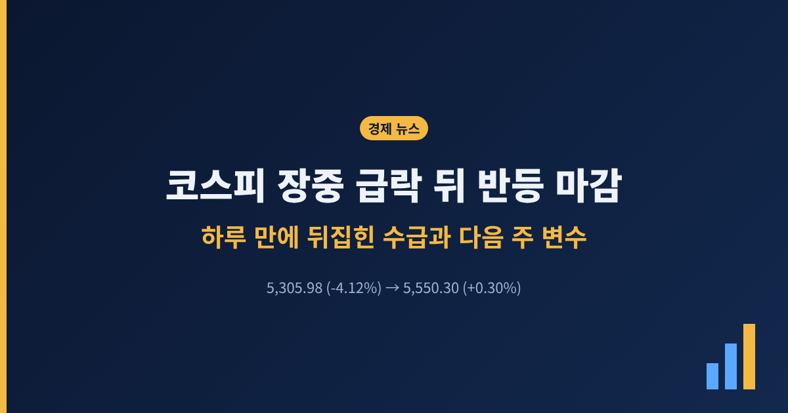
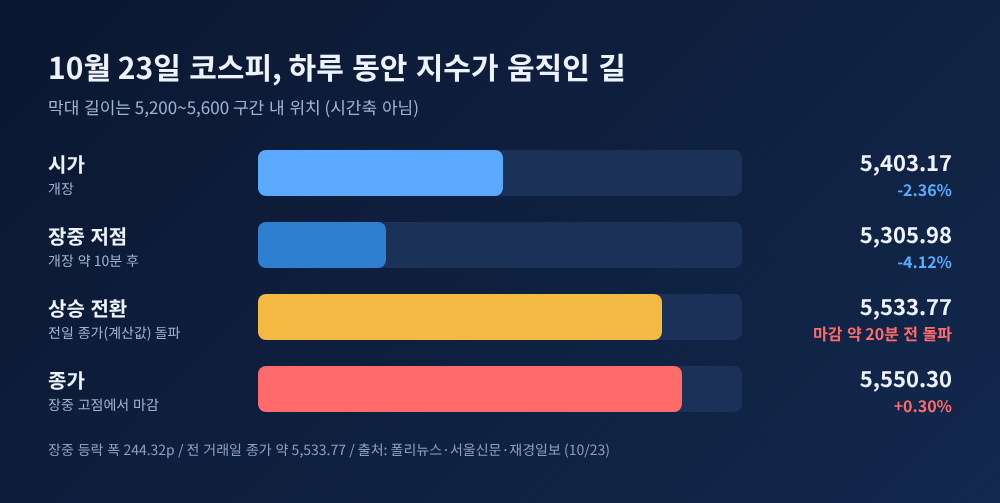
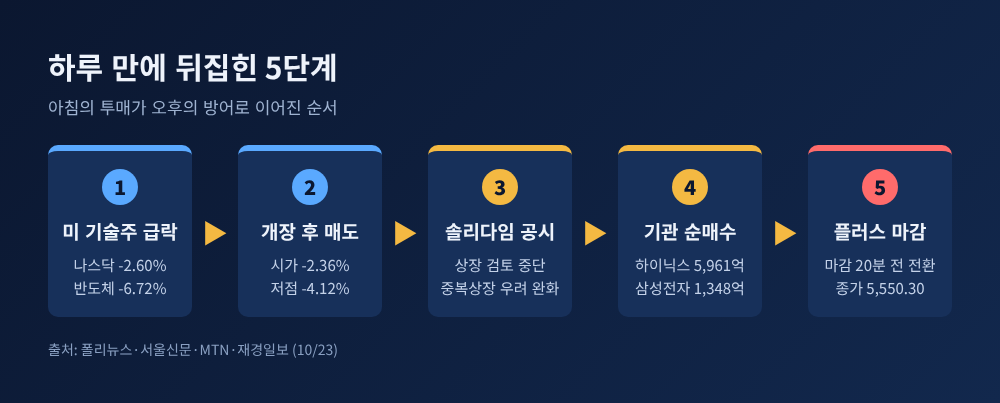
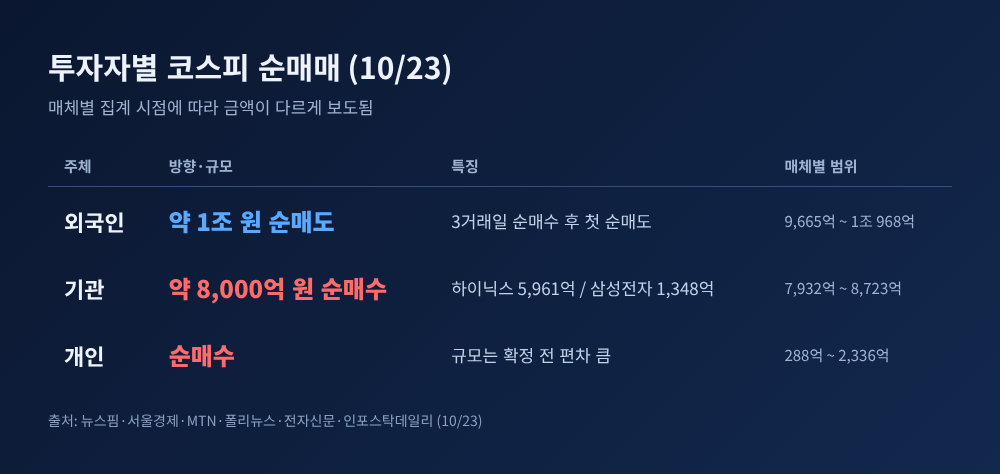
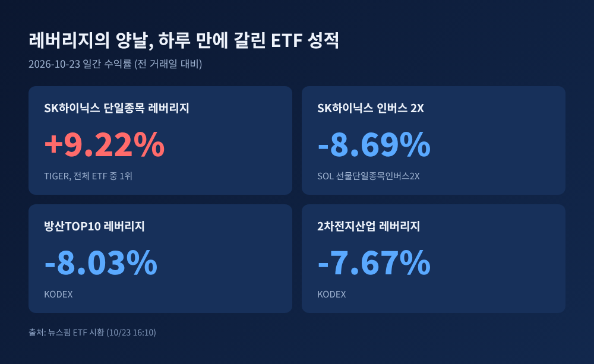
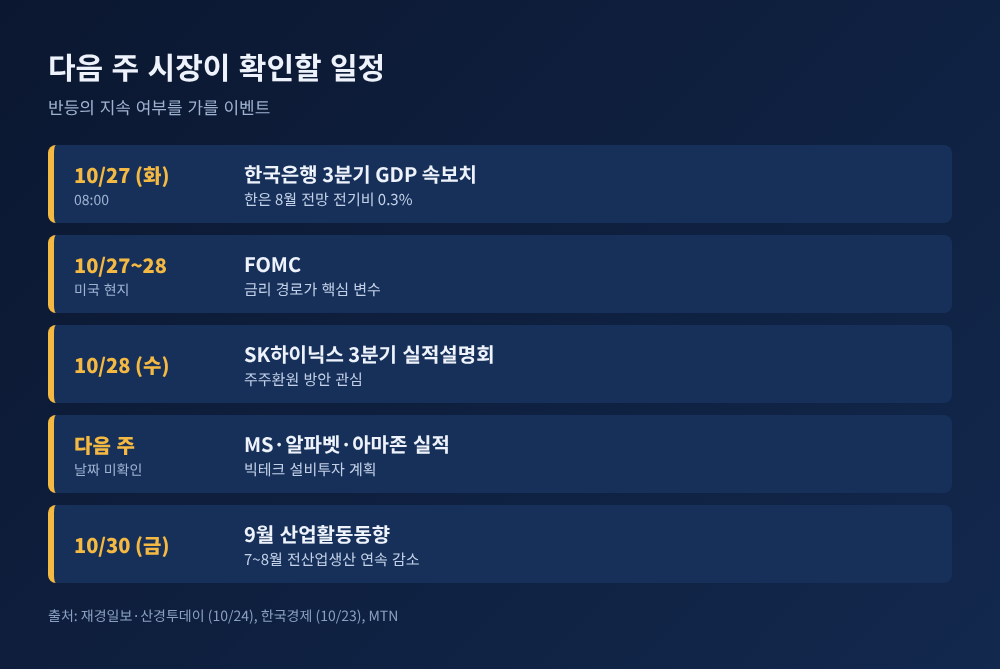

이번 글에서는 10월 23일 코스피가 장중 4%대 급락에서 플러스 마감으로 돌아선 과정을 정리해 보겠습니다. 급락의 원인은 직전 글에서 다뤘으니, 여기서는 지수가 왜 하루 만에 뒤집혔는지와 다음 주에 지켜볼 변수에 초점을 맞춥니다.
세 줄 요약 - 코스피는 5,305.98까지 밀렸다가 5,550.30(+0.30%)에 마감했습니다. - 반등의 불씨는 SK하이닉스의 솔리다임 상장 검토 중단 공시와 기관의 대형 반도체주 매수였습니다. - 다음 주에는 27일 3분기 GDP 속보치와 미국 FOMC, 빅테크 실적이 이어집니다.
10월 23일 코스피는 5,403.17에 출발했습니다. 전 거래일보다 2.36% 낮은 시작이었습니다. 개장 10분쯤 지나 5,305.98까지 내려갔습니다. 낙폭 4.12%이고, 7월 29일(5,262.77) 이후 가장 낮은 수준이었습니다.
그런데 오후 들어 분위기가 바뀌었습니다. 마감 20분 전쯤 상승으로 돌아섰고, 종가 5,550.30은 이날 장중 고점이었습니다. 전 거래일보다 16.53포인트(0.30%) 오른 값입니다. 장중 등락 폭은 244.32포인트에 달했습니다. (출처: 폴리뉴스, 서울신문, 재경일보 10/23)

종목별로는 엇갈림이 컸습니다. SK하이닉스는 장 초반 4% 넘게 밀렸다가 127만 7,000원(+4.42%)으로 마감했습니다. 삼성전자도 시가에는 5.13% 낮은 20만 3,500원이었으나, 종가는 21만 5,500원(+0.47%)이었습니다. 원/달러 환율은 오후 3시 30분 기준 1,324.6원으로 전 거래일 주간 종가보다 0.4원 올랐습니다. (출처: 뉴스핌, 파이낸셜뉴스)
숫자만 보면 평범한 소폭 상승 마감입니다. 다만 그 안을 들여다보면 이야기가 다릅니다. 코스피에서 내린 종목이 700개 안팎, 오른 종목은 170개 안팎이었습니다. 집계 시점에 따라 하락 719 대 상승 173(재경일보), 하락 756 대 상승 146(전자신문)으로 나옵니다.
지수는 올랐는데 대부분의 종목은 내렸다는 뜻입니다. SK하이닉스, 삼성바이오로직스(+7.71%), SK스퀘어(+3.20%) 같은 시가총액 상위 종목이 지수를 떠받쳤습니다. 반대로 KB금융은 3.29%, 삼성SDI는 4.20% 내렸고, 코스닥은 1.62% 하락한 751.69로 마감했습니다.
예전엔 지수가 오르면 대체로 내 계좌도 올랐습니다. 이날은 지수와 체감 수익률이 따로 움직였습니다. 이 차이가 이번 반등의 성격을 가장 잘 보여줍니다. 시장 전체의 안도라기보다, 소수 대형주에 몰린 매수가 만든 반전이었습니다.
급락 원인은 간밤 미국 증시였습니다. 나스닥이 2.60% 떨어져 6월 이후 가장 큰 낙폭을 기록했고, 필라델피아반도체지수는 6.72% 하락했습니다. 메타가 잉여현금흐름 적자와 신주 발행 계획을 내놓으면서 AI 투자의 자금 조달 부담이 부각된 영향입니다. (출처: 폴리뉴스 10/23) 이 부분은 직전 글에서 자세히 다뤘기에 여기서는 생략합니다.
이날 아침의 변수는 따로 있었습니다. SK하이닉스가 개장 전에 손자회사 솔리다임의 프리IPO와 IPO 검토를 중단한다고 공시했습니다. 회사는 자본시장 여건을 이유로 들었습니다. 시장은 이를 중복상장으로 주주가치가 희석될 우려가 덜어진 것으로 읽었습니다. 서울경제는 금융당국이 해외 상장도 중복상장 규제 대상이라는 입장을 밝힌 바 있다고 전했습니다.

공시가 아침에 나왔는데도 하이닉스는 한때 5% 넘게 밀렸습니다. 불안이 호재를 한동안 눌렀다는 뜻입니다. 오전의 투매가 잦아들면서 호재가 비로소 가격에 반영되기 시작한 것으로 보입니다.
대신증권 이경민 연구원은 전날 삼성전자와 SK하이닉스의 큰 폭 하락이 미국발 AI 투자 우려를 이미 반영했다고 설명했습니다. 메타발 충격이 선반영돼 낙폭이 제한적이었다는 진단입니다. (출처: 재경일보, 전자신문)
수급을 보면 반전의 주체가 드러납니다. 외국인은 코스피에서 약 1조 원 안팎을 순매도했습니다. 3거래일 연속 순매수 뒤 처음 돌아선 순매도입니다. 기관은 8,000억 원 안팎을 순매수했고, 그중 SK하이닉스에 5,961억 원, 삼성전자에 1,348억 원이 들어갔습니다.
개인은 순매수였지만 규모는 매체마다 288억 원에서 2,336억 원까지 다릅니다. 장 마감 직후 잠정 집계가 시점별로 달랐기 때문으로 보이며, 정확한 금액은 확정 통계를 기다려야 합니다.

외국인이 팔 때 기관이 사면 지수는 버팁니다. 다만 기관의 매수가 하루로 끝나는지는 별개의 문제입니다. 이날 기관의 순매수는 대형 반도체주에 집중됐고, 하락 종목이 훨씬 많았다는 점을 함께 봐야 합니다.
이날 가장 극적인 숫자는 지수가 아니라 ETF에서 나왔습니다. TIGER SK하이닉스단일종목레버리지는 하루 9.22% 올라 전체 ETF 중 일간 수익률 1위였습니다. KODEX는 8.80%, ACE는 8.37%였습니다. 같은 날 SOL SK하이닉스선물단일종목인버스2X는 8.69% 내렸습니다. KODEX 방산TOP10레버리지가 8.03%, KODEX 2차전지산업레버리지가 7.67% 하락한 것도 눈에 띕니다. (출처: 뉴스핌 ETF 시황 10/23)
레버리지는 반등할 때 이익을 키우고, 하락할 때 손실을 키웁니다. 하루 사이에 두 방향을 모두 보여준 날이었습니다. 개인의 레버리지 선호는 앞선 주에도 확인됩니다. 코스콤 자료로 본 한 주 개인 순매수 1위가 KODEX 레버리지(6,427억 원)였습니다. 같은 기간 투자자예탁금은 10월 1일 104조 6,644억 원에서 16일 94조 4,030억 원으로 9.80% 줄었습니다. (출처: 글로벌이코노믹 10/20)

변동성 장치는 어땠을까요. 제가 확인한 10월 23일 마감 기사들에는 사이드카나 서킷브레이커 발동 언급이 없었습니다. 발동하지 않았다고 단정하기는 어렵지만, 적어도 보도된 사실은 아니라는 뜻입니다. 제도상 두 장치는 선물과 지수가 일정 폭 이상 급변할 때 작동하도록 설계돼 있습니다. 현물 낙폭 4.12%는 그 문턱 아래에서 멈춘 것으로 보입니다.
그 덕에 장중 투매가 별도의 거래 정지 없이 이어졌고, 오후의 저가 매수도 끊김 없이 들어올 수 있었을 것입니다. 이 해석은 추정이라는 점을 밝혀 둡니다.
반등이 하루로 끝날지는 다음 주 일정에 달려 있습니다.
첫째, 27일 오전 8시 한국은행의 3분기 GDP 속보치입니다. 한은은 8월 전망에서 3분기 전기 대비 성장률을 0.3%로 제시했고, 연간 전망은 2.6%에서 3.3%로 올렸습니다. 올해 1분기 1.8%, 2분기 0.6%였습니다. 신현송 총재는 10월 소비자물가와 3분기 GDP를 본 뒤 11월 기준금리를 결정하겠다고 밝혔습니다. 시장 컨센서스는 제가 확인하지 못했습니다.
둘째, 미국 FOMC가 27~28일(현지 기준) 열립니다. KB증권 임정은 연구원은 금리 경로를 핵심 변수로 꼽았습니다.
셋째, 마이크로소프트, 알파벳, 아마존 등 빅테크 실적입니다. 한국경제는 미국 빅테크의 설비투자 계획이 국내 반도체 실적의 핵심 변수라고 짚었습니다. 구체적인 발표 일자는 확인하지 못했습니다.
넷째, 28일 SK하이닉스 3분기 실적설명회입니다. 메리츠증권 김선우 연구원은 기대를 넘는 주주환원책이 나올 가능성을 언급했습니다. 30일에는 9월 산업활동동향도 나옵니다. 7~8월 연속 감소한 전산업생산이 반등할지가 관심사입니다.

한계도 분명합니다. 이날 반등을 만든 재료 중 솔리다임 건은 일회성 이벤트에 가깝습니다. 외국인 매도, AI 투자 자금 조달 불안, 유가라는 뿌리는 그대로입니다. 반등이 추세 전환인지, 낙폭 과대에 따른 기술적 되돌림인지는 지금 단정할 수 없습니다.
정리하면 이렇습니다. 하루 만의 반전은 호재 하나, 기관의 방어, 레버리지의 증폭이 겹친 결과였습니다. 지수의 숫자보다 종목 수와 수급의 방향을 함께 보셔야 합니다.
"지수는 하루 만에 뒤집혔지만, 구조는 뒤집히지 않았다."
다음 주 월요일 장이 열리면 이 반등이 무엇이었는지 조금 더 분명해질 것입니다.
※ 이 글은 공개된 보도를 바탕으로 한 시장 해설이며, 특정 종목이나 상품의 매수·매도를 권유하는 투자 권유가 아닙니다. 투자 판단과 그 결과의 책임은 투자자 본인에게 있습니다. 수급 등 일부 수치는 매체별 집계 시점에 따라 차이가 있을 수 있습니다.
참고 출처: 뉴스핌 10/23(마감시황·ETF 시황), 서울신문 10/23, 폴리뉴스 10/23, 재경일보 10/23·10/24, 전자신문 10/23, MTN 10/23, 파이낸셜뉴스 10/23, 글로벌이코노믹 10/20, 산경투데이 10/24, 한국경제 10/23